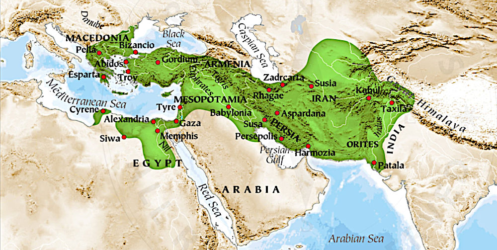

The Alexandrian Empire
Stretching from Greece to India
Timeline for the Ancient World
Listed here are most of the great thinkers of the ancient world. Wherever possible, approximate birth and death times are mentioned, otherwise the time in which they flourished or gained renown.The part of the ancient world which is of interest is namely that of the Alexandrian Empire and the Egyptian Kingdoms preceding it. Upon its foundation, many different philosophies poured into Greece, coming together to form Hellenistic Philosophy and the birth of what became known as Western Philosophy.
Old Kingdom of Egypt c. 2686 BC – c. 2181 BC Middle Kingdom of Egypt c. 2055 BC – c. 1650 BC New Kingdom of Egypt c. 1550 BC – c. 1077 BC Phoenicia c. 1500 BC – c. 539 BC Thales of Miletus c. 624 – c. 546 BC (poss. Phonecian) Pythagoras of Samos c. 570 – c. 495 BC Heraclitus of Ephesus c. 535 – c. 475 BC Empedocles c. 490 – c. 430 BC Herodotus c. 484 – c. 425 BC Plato c. 427 – c. 347 BC Aristotle c. 384 – c. 322 BC Zeno of Citium c. 334 – c. 262 BC Alexandria was founded c. 331 BC Berossos fl. 290 – 278 BC Babylonia Manetho early 3rd century BC Sebennytos Chrysippus of Soli c. 279 – c. 206 BC Posidonius of Rhodes c. 135 – c. 51 BC (born in Apamea, Syria) Marcus Tullius Cicero 3 Jan 106 BC – 7 Dec 43 BC Seneca the Younger c. 4 BC – AD 65 Marcus Manilius fl. 1st century before 14 AD Dorotheus of Sidon fl. 1st century Alexandria fl. 25 - 75 Serapio of Alexandria fl. 1st century Alexandria Plutarch c. 46 – 120 Claudius Ptolemaeus c. 100 – c. 170 Alexandria (Almagest 127, Tetrabiblos 150-170) Vettius Valens 8 Feb 120 – c. 175 Alexandria (Anthologies 152-162) Marcus Aurelius 26 Apr 121 – 17 Mar 180 Sextus Empiricus c. 160 – c. 210 Plotinus c. 204/5 – 270 Diogenes Laërtius fl. 222 – 235 Porphyry c. 234 – c. 305 (born in Tyre, Phonecia/Lebanon) Iamblichus c. 245 – c. 325 (born at Chalcis/Qinnasrin in Syria) Zosimos of Panopolis fl. 300 (born in Panopolis/Akhmim/southern Roman Egypt) Firmicus Maternus c.280 to c.360 fl. 306 to 337 AD Paulus Alexandrinus fl. 378 Alexandria Sacking of Rome August 24, 410 Augustine of Hippo 13 Nov 354 – 28 Aug 430 Rhetorius the Egyptian lived around 505 Muhammad c. 570 - 8 Jun 632 Roman Hispania 218 BC - 409 AD /90% 429-439/ Visigoth Hispania 409/418/484/507/585 Byzantine Spania 552 - 624 (southern strip) Umayyad Hispania 711(-719) to 788 Abbasid overthrow of the Ummayad caliphate 750 Muslim Al-Andalus 711 - 1492 (Moorish name) Stephanos of Alexandria was a 7th-century Byzantine philosopher Jābir ibn Hayyān c. 721 – c. 815 al-Rāzī c. 854(or 864) - 15 Oct 925 --------------------------------------------------------------------------------------- Rise of the Ottoman Empire 1299 - 1453 (Fall of Constantinople) Byzantium 395 - 1453 (Fall of Constantinople) Plethon (Georgius Gemistus) 1355/60 - 1452/4 reintroduced Neoplatonism to Europe 1438/9 Council of Florence 1438 – 1439 Marsilio Ficino 1433 – 1499 Corpus Hermeticum 1460 (Leonardo de Candia Pistoia) pub. by Ficino 1471 Paracelsus c. 1493/4 - 24 Sep 1541 classical witch hunts ~1450 - 1750 ---------------------------------------------------------------------------------------- Auguste Bouché-Leclercq 30 Jul 1842 Francières Oise – 19 Jul 1923 Julius Ferdinand Ruska 9 Feb 1867 Bühl Baden - 11 Feb 1949
About
Hi, my name is Rod Schneider and I have created this website to illustrate how, with the help of astrology, that negativity can be converted into something more positive. The astrology being shown here is rooted in the most ancient inceptions derived from Hermetism. It is technical but in the hands of a practioner already familiar with astrology has great potential to be helpful. There is also much help for non-astrologers to use astrology in a different manner, namely with cycles and phases.Comments and contributions are always welcome.
Contact: rodschneider35@gmail.com